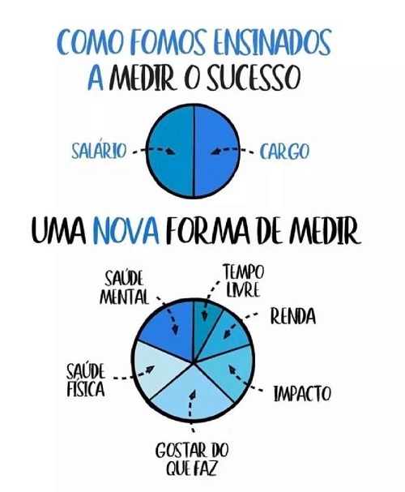

Resolvi Mudar
"Um belo dia resolvi mudar e fazer tudo o que queria fazer..." se você não conhece essa música, possivelmente, você é muitíssimo jovem ou mora numa caverna.
Bem me apropriei da música de Rita Lee para fazer do meu lema de vida nos útimos meses, pois resolvi abandonar um cargo de gerência e bem remunerado para virar...estagiária! Pasmem...
Sei que nesse momento todas me acham bem louca (até mesmo eu), mas o sucesso que busco é de acordo com essa nova forma:
Sendo assim, inicio a minha nova carreira na área de TI com muita coragem, determinação e paixão.
Tenho certeza que, em breve, estarei de volta a um cargo de chefia exercendo meu trabalho com excelência assim como fiz na minha profissão de Química Industrial.
Se chegou até aqui tenho um recado para você: Não imponha barreiras aos seus sonhos nunca! Sempre está em tempo de mudar.
Beijos e até a próxima! ♥